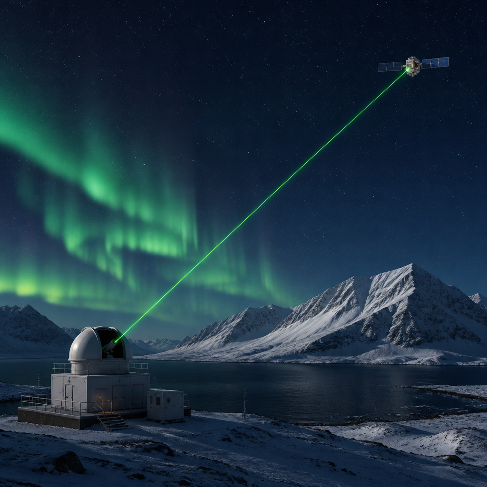
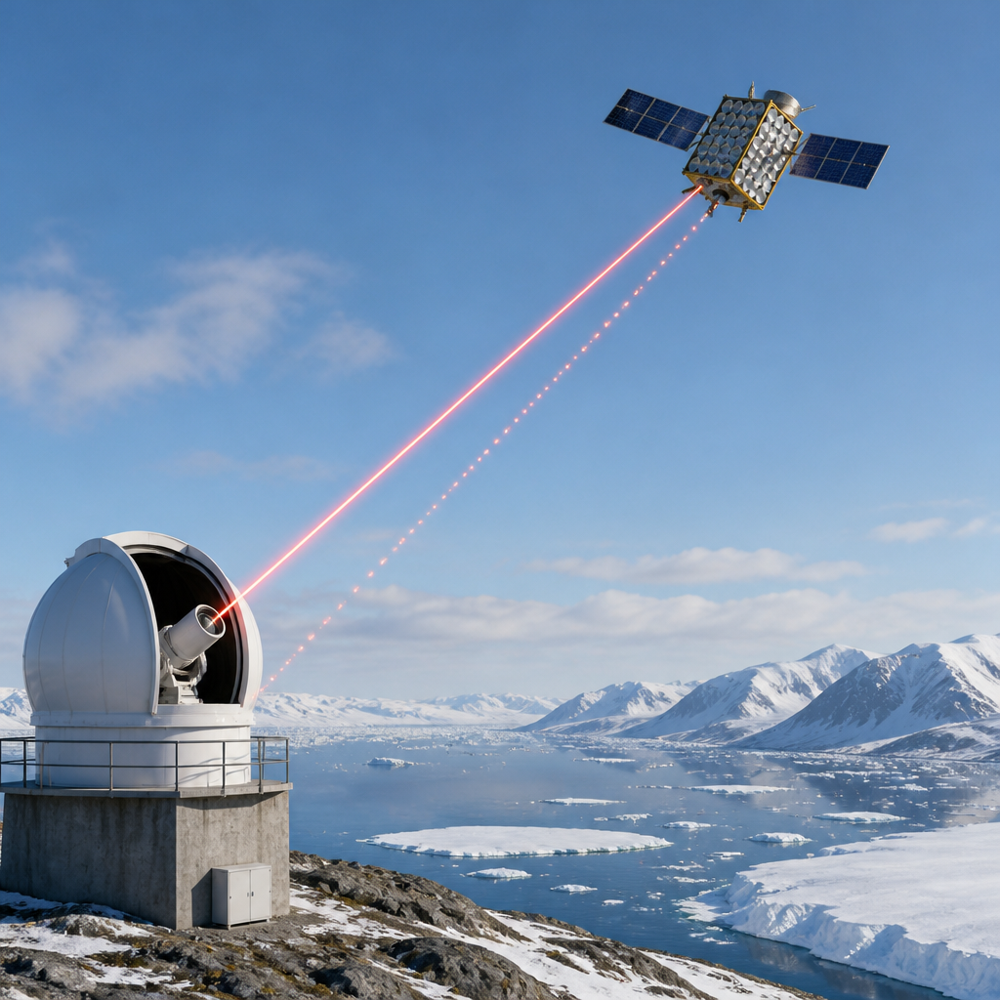

Il sistema di telemetria laser satellitare di nuova generazione rafforza le misure della Terra dall’Artico.
Nell’arcipelago artico delle Svalbard è entrato in funzione un nuovo strumento NASA per seguire i satelliti con il laser. Il sistema si trova all’Osservatorio geodetico di Ny-Ålesund, sulla costa occidentale di Spitsbergen, un’isola dell’arcipelago norvegese delle Svalbard. È il primo sistema NASA di telemetria laser satellitare di nuova generazione operativo ed è anche la struttura di questo tipo più a nord del pianeta.
La telemetria laser satellitare, indicata con la sigla SLR, è una tecnica che determina la distanza di un satellite inviando verso di esso impulsi di luce laser e misurando il tempo necessario perché la luce torni alla stazione. I satelliti osservati sono dotati di speciali riflettori. Conoscendo il tempo di andata e ritorno della luce, gli scienziati possono ricostruire le orbite con grande precisione.
Più di sessant’anni fa, gli scienziati del Goddard Space Flight Center della NASA puntarono un laser verso il cielo e inviarono un impulso luminoso a un satellite in orbita. La misura del ritorno della luce mostrò un nuovo metodo, più preciso, per tracciare i satelliti. Da allora la tecnica è diventata via via più accurata e più diffusa.
Oggi la telemetria laser satellitare sostiene diverse attività di osservazione della Terra: aiuta a verificare le orbite dei satelliti e a mappare cambiamenti molto piccoli della superficie terrestre. La rete mondiale di tracciamento laser conta più di quaranta stazioni. Le strutture sviluppate nei decenni passati hanno svolto a lungo questo lavoro, ma l’età degli strumenti e il numero crescente di satelliti hanno reso necessari aggiornamenti.

Il nuovo sistema installato a Ny-Ålesund è il risultato di anni di sviluppo, test e calibrazioni. I suoi laser possono inviare impulsi migliaia di volte al secondo, mentre i sistemi precedenti lavoravano con impulsi nell’ordine delle decine di volte al secondo. Dispone inoltre di sensori capaci di rilevare singoli fotoni, cioè le unità di luce: questo permette di lavorare anche quando dal satellite viene riflessa una quantità minore di luce.
L’obiettivo è seguire più oggetti e farlo con maggiore accuratezza e precisione. Non si tratta però soltanto di conoscere il percorso dei satelliti. La SLR è fondamentale anche per stabilire il sistema di riferimento terrestre, cioè la base comune dei moderni sistemi di coordinate che consente di confrontare fra loro misure diverse. Per collocare correttamente su una mappa un’osservazione realizzata da un satellite, quella misura deve infatti essere inserita nel giusto sistema di riferimento.
Un sistema di riferimento accurato serve anche per tracciare il centro di massa della Terra, misurare le variazioni del livello del mare e della massa dei ghiacci, studiare il movimento delle placche tettoniche e mantenere i sistemi globali di navigazione satellitare, compreso il GPS.
La posizione settentrionale di Ny-Ålesund migliora la distribuzione delle stazioni della rete sul pianeta e rende l’insieme più robusto. Soprattutto, offre più occasioni per raccogliere dati sui satelliti in orbita polare, quelli che passano sopra le regioni vicine ai poli. Tra questi figurano ICESat-2, GRACE-FO e altri satelliti per l’osservazione della Terra.
Da Goddard i satelliti in orbita polare possono essere osservati solo alcune volte al giorno; da Ny-Ålesund possono invece essere visti quasi a ogni orbita. La collocazione artica potrebbe risultare particolarmente utile per ICESat-2, una missione progettata per osservare con precisione l’altezza della superficie dei ghiacci. Seguire il satellite da una regione polare ghiacciata può contribuire a rendere più accurate le misure effettuate sopra il ghiaccio.
Il nuovo sistema laser di Ny-Ålesund misura le distanze dei satelliti con impulsi più rapidi e sensori in grado di rilevare singoli fotoni. La sua posizione nell’Artico rafforza la rete globale e aumenta le osservazioni dei satelliti in orbita polare.
L’installazione alle Svalbard ha portato anche a miglioramenti nell’automazione. La stazione si trova accanto a un santuario degli uccelli e, in alcuni periodi, comprese fasi della stagione estiva di riproduzione degli uccelli migratori, le restrizioni di accesso richiedono il funzionamento a distanza. Le soluzioni sviluppate per gestire queste condizioni potranno essere perfezionate e applicate anche ad altre stazioni.
La NASA sta inoltre costruendo altri due sistemi SLR di nuova generazione, destinati a sostituire strumenti precedenti a Goddard e all’Osservatorio geodetico McDonald, in Texas. L’esperienza raccolta a Ny-Ålesund servirà quindi anche per le prossime installazioni della rete.
Questo articolo l'hai letto sul blog di Meteo News Radar: un'app che ti mostra da dove vengono i numeri, invece di limitarsi a dartelo. E ogni mattina ne trovi uno nuovo come questo.